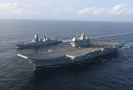

3 cheers for INS Vikrant

The commissioning of INS Vikrant, the new avatar of the Indian Navy’s first aircraft carrier and flag carrier for almost five decades, is a day of celebration for India. And for good reason.
At about three times the original (42,800 tons versus 16,000 tons), it isn’t just the biggest warship designed and built in India, it’s also fully a swadeshi design.
That’s a matter of great pride as it places India among an elite list of nations with the ability to build such a warship. A list so elite, you can mostly count it on the fingers of one hand. Of course, we are excluding Britain for now.
You’d need to be a rare Indian indifferent to such national achievement, or maybe one from the somewhat less rare community of war-hating, give-peace-a-chance walas, to not join in the celebration.
We are none of these, so congratulations Indian Navy, its brilliant and evolving design bureau, engineers, marine warfare visionaries, and of course, India’s political leaders spanning 25 years and the tenure of three prime ministers beginning with Atal Bihari Vajpayee.
It was under his leadership that the designing process of this Make-in-India or Atmanirbhar carrier began. The Cabinet Committee on Security, under him, cleared the project for construction in 2002.
We can ask why it took India, with its engineering base, 23 years to commission this ship. Especially when the Chinese would build a much bigger one in just three to four years, and in any case, for the new Vikrant, the engines are American, GE imports.
The Chinese already have two fully operational carriers, one of them fully home-made, almost twice the size of the new Vikrant, carrying not only many more aircraft, but way more potent ones like the J-15 or other Chinese copies of Su-30 variants. The third, which the Chinese with their speed may operationalise as early as next year, is estimated to be in the one-lakh ton class.
But these are the perennial issues with India’s defence manufacturing. We’ve been fretting over these and will continue to do so. This is the time to look at the future with an open mind. Three immediate questions therefore arise.
The most important of which is, does India need aircraft carriers? And if so, what kind and how many? And third, what kind of firepower should — and can — India field from these mighty vessels, and where will it come from?